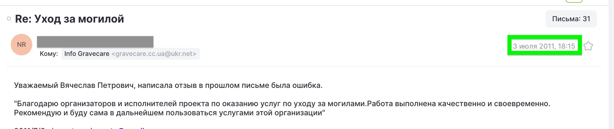
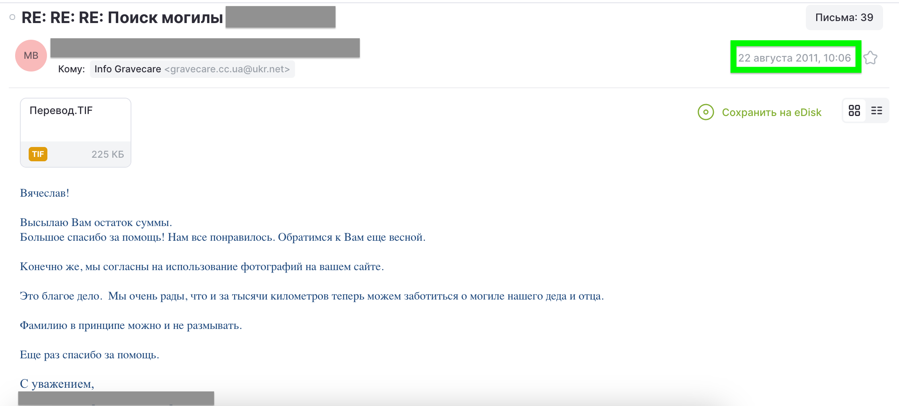
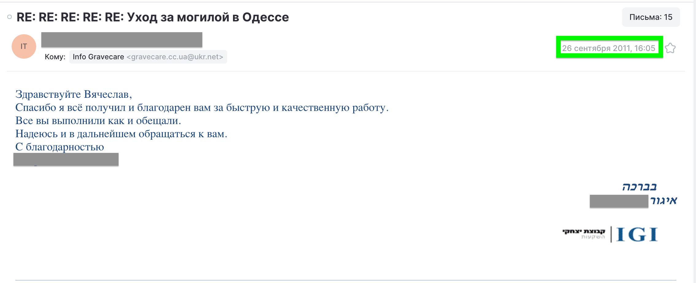
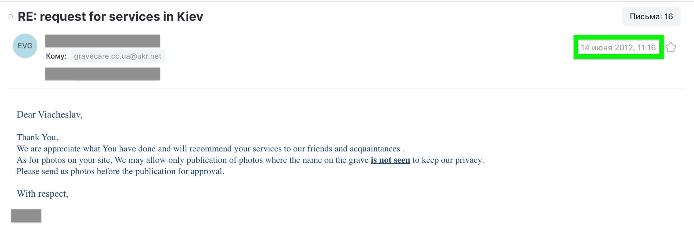

Чому ми почали
У 2008 році мільйони українських сімей уже були розкидані по всьому світу — у США, Ізраїлі, Німеччині, Канаді та інших країнах. Багато хто мав могили батьків і дідусів-бабусь в Україні. Деякі не приїжджали роками. Деяким нікого було попросити і знайомі попросили нас навідати та прибрати могилку їх рідних.
Пізніше нас почали радити і зародилася послуга... Ідея була проста: бути тією людиною, яка відвідує місце поховання, приходить прибрати могилу, сфотографувати, надіслати фото сім'ї. Дати їм побачити, що пам'ять збереглася — навіть здалеку. Ми підходимо до цього так само, як доглядали б за могилами власної родини — це не гасло, а правило, якого ми дотримуємося під час кожного відвідування.
Інформація поширювалася тихо роками — через електронну пошту, форуми, через те що одна сім'я розповідала іншій та просто через пошукові запити у Google та інших системах. Зараз ми охоплюємо понад 15 міст по всій Україні.
«Це благе діло. Ми дуже раді, що навіть за тисячі кілометрів тепер можемо дбати про могилу нашого дідуся.»
— Клієнт зі США, серпень 2011 р.«Дякуємо за швидку та якісну роботу. Ви зробили все, як обіцяли. Сподіваюся на подальшу співпрацю.»
— Клієнт з Ізраїлю, вересень 2011 р.Задокументована історія
Кожен пункт нижче можна перевірити. Ми посилаємося на зовнішні архіви та незалежні джерела скрізь, де це можливо.
Це почалося з послуги
Не як бізнес — просто люди з нашого оточення, які виїхали за кордон, просили відвідати могилу. Прибрати, сфотографувати. Вони надсилали трохи грошей на бензин, не більше. Ми робили це так, як зробили б для власної родини. Вони були вдячні й говорили про це.
«Вам варто робити це для інших»
Люди, яким ми допомогли вперше, постійно говорили одне й те саме: те, що ви робите, потрібне, за кордоном багато таких сімей. Вони поцікавились, чи можуть запропонувати це декільком знайомим. Ми домовилися про ціни з першими незнайомими людьми, виконали роботу, і все вийшло добре. До весни 2010 року стало зрозуміло, що це варто розвивати організовано — тому ми запустили gravecare.cc.ua, який працює по сьогоднішній день.
Сайт — онлайн з 2010 року, в архіві з першого дня
Оригінальний сайт gravecare.cc.ua безперервно працює з 2010 року — оновлювався з роками, але за тією самою адресою. Він також збережений незалежно від нас у Wayback Machine Інтернет-архіву з самого початку, тож ви можете переглянути, як він виглядав у 2010 році і змінювався у подільшому.
Перші спроби просувати послуги — і перші листи подяки
У 2011 році ми почали робити себе помітними: публікували на форумах діаспори, зверталися до емігрантських спільнот, щоб люди, яким потрібна така допомога, могли нас знайти. Одним із таких місць, що все ще містить наше оголощення був Germany.ru — одна з головних онлайн-спільнот для російськомовних людей у Німеччині. Клієнти почали писати на нашу оригінальну адресу gravecare.cc.ua@ukr.net, і відгуки підтвердили, що ми на правильному шляху. Нижче — скріншот форумного допису та реальних листів клієнтів того часу.




Імена приховані на прохання клієнтів. Метадані листів, теми та дати — без змін. У 2011–2013 роках ми були активні й на інших форумах діаспори, але більшість тих сайтів вже не існує — більше 15 років в інтернеті це багато.
Розширення по всій Україні
Запити були не тільки по Києву, то ж ми почали формувати мережу перевірених місцевих партнерів в Одесі, Харкові, Полтаві, Миколаєві та інших містах — кожен перевірявся особисто перед тим, як приймати замовлення клієнтів. Бо ми стаємо вдвічі відповідальними, коли самостійно не можемо бути присутні, тому ми співпрацюємо з надійними, відповідальними і моральними людьми.
Присутність у соціальних мережах
У червні 2016 року ми з'явилися на Facebook і X (Twitter), щоб бути там, де наші міжнародні клієнти, — для спілкування, присутності та зручності пошуку. Восени 2019 року ми почали публікувати фото робіт на Pinterest, а у 2021 році додали Instagram.
500 відвідувань (прибирань) виконано
Постійні клієнти зі США, Ізраїлю, Німеччини та Канади — сім'ї, які довіряли нам щось глибоко особисте рік за роком. Більшість з них залишаються клієнтами й сьогодні. Деякі з наших нинішніх клієнтів з нами з самих перших років — 2008–2010 — коли не було ні сайту, ні прописаної вартості, просто добре виконана послуга.
Продовжуємо попри війну
Ми продовжували працювати там, де це було безпечно, і чесно говорили клієнтам, що неможливо. Якщо не могли дістатися до місця — повідомляли про це і не брали кошти, або повертали. Багато сімей — зі США, Ізраїлю, Німеччини, Канади, Польщі та інших країн — вперше звернулися до нас після лютого 2022 року, коли поїздка до України стала раптово і на невизначений час неможливою.
Новий сайт · 1 000+ відвідувань виконано
Оновили онлайн-присутність для зручнішого обслуговування англомовних сімей, додали нові варіанти оплати. Робота залишилася незмінною — кожне відвідування завершується фотографіями до і після, надісланими безпосередньо сім'ї.
Перевірювані зовнішні джерела
Сторонні джерела, які незалежно підтверджують нашу історію. Довіра не повинна ґрунтуватися лише на тому, що ми самі про себе говоримо.
Ви також можете переглянути нашу повну галерею «до і після» на головній сторінці та наш архів Pinterest — фотографії робіт із мітками часу, що публікуються з 2019 року.
Як ми працюємо — чого очікувати
Ми працюємо з сім'ями з 10+ країн упродовж років. Ці речі ніколи не змінювалися.
- ✓Спочатку домовляємося про все. Ціна, обсяг, дата — все підтверджується до початку робіт. Жодних сюрпризів, жодних рахунків за те, про що ви не просили.
- ✓Фото до і після — на кожному відвідуванні. 4 фото до початку, 4 після. Ви бачите саме те, що було зроблено — не опис, а реальні фотографії.
- ✓Відповідаємо протягом 24 годин. Якщо щось незрозуміло — питаємо. Не вгадуємо і не зникаємо.
- ✓Чесно говоримо, що неможливо. Якщо місце недоступне або небезпечне — повідомляємо про це й повертаємо кошти.
- ✓Постійні клієнти: без передоплати. Після першого замовлення ми працюємо на довірі.